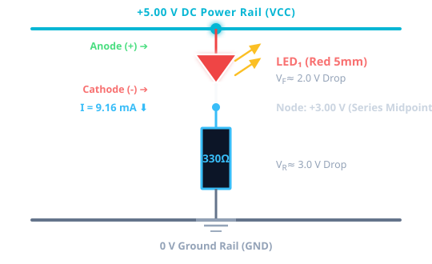

Unit 19 Launch: “Can You Make It Work?”
Safe Electronic Working Practices, Circuit Baseline, & Prototype Troubleshooting
Welcome to Unit 19: Electronic Devices and Circuits. Today, you step into the role of a Junior Electronics Technician. You will construct a baseline LED indicator, verify safe operation, and investigate a deliberately faulted prototype circuit using structured engineering diagnostics.
Workplace Engineering Scenario
Junior Electronics Technician at Prototype Development Lab
“A prototype indicator board has just failed bench testing. The customer needs verification today. Before we scrap the board or replace parts, I need your team to systematically isolate the problem.”
- ❌ DO NOT GUESS: A technician never guesses or changes components randomly.
- ❌ DO NOT POWER BLINDLY: Always complete a pre-power inspection first.
- ✅ GATHER EVIDENCE: Every multimeter probe placement must answer a specific question.
- ✅ PROVE THE FIX: Record before/after measurements to verify the repair.
Learning Objectives & Engineering KSBs
Pearson BTEC Level 3 Unit 19 Specification Alignment
🧠 Knowledge (K)
- Low-voltage electrical hazards & risk isolation procedures (A1).
- Circuit schematic symbols: DC supply, resistors, LEDs, switches (A5).
- Purpose of current-limiting resistance in semiconductor circuits.
🛠️ Skills (S)
- Conduct rigorous pre-power breadboard checks.
- Measure DC voltage (V) and current (mA) safely with a DMM (A6).
- Execute 6-stage systematic fault finding (Observe → Verify).
🤝 Behaviours (B)
- Build → Test → Break → Fix → Repeat mindset.
- Pair collaboration: Builder & Tester roles.
- Authentic evidence logging without guesswork.
Today's Session Sequence
160 Active Minutes of Guided Practical Engineering
| Phase | Duration | Activity & Milestone |
|---|---|---|
| Phase 1 | 0 – 15m | Engineering Toolbox Baseline: Diagnostic retrieval & electrical quantities. |
| Phase 2 | 15 – 35m | Safety & Emergency Scenario: Smoke on bench, isolation protocols & SOPs. |
| Phase 3 | 35 – 55m | Schematic to Physical: Breadboard layout, resistor values, LED polarity. |
| Phase 4 | 55 – 75m | Pre-Power Inspection: Complete safety checks prior to energisation. |
| Break | 75 – 95m | 20-Minute Refreshment Break |
| Phase 5 | 95 – 130m | Troubleshooting Challenge: Power up, measure, locate fault, repair & verify. |
| Phase 6 | 130 – 145m | Stretch Challenge: Second fault diagnosis or procedure authoring. |
| Phase 7 & 8 | 145 – 160m | PoE 01 Documentation & Engineer Exit Ticket. |
Safe Electronic Working Practices
Hazard Identification, Risk Mitigation, & Laboratory Standard Operating Procedures (SOPs)
- ⚠️ Electrical Hazards: Short circuits, incorrect power supply voltage, inverted polarity, and reverse-biased semiconductors.
- ⚠️ Thermal & Component Hazards: Over-current through low-value resistors leading to rapid overheating, smoking, or component rupturing.
- ⚠️ ESD & Mechanical Hazards: Static discharge damaging sensitive devices; sharp wire clippings causing injury or shorting breadboard rails.
- ⚠️ Equipment Misconnection: Connecting a low-impedance current meter directly across power rails causing blown fuses.
- ✅ Personal Protective Equipment (PPE): Wear approved safety eye protection against flying component debris/wire snipping, ESD grounding wrist straps for sensitive semiconductors, and keep long hair/loose clothing secured.
- ✅ Pre-Power Verification: Always inspect wiring, resistor values, and polarity BEFORE turning on the DC supply.
- ✅ Current Limiting: Always set bench power supply current limits (e.g., ≤ 100 mA for prototype logic) to protect devices.
- ✅ Power Isolation: Always switch off power before inserting, removing, or relocating components on the breadboard.
- ✅ Clean Workspace: Maintain a clean, dry bench and immediately discard trimmed component leads into designated scrap containers.
Safety Scenarios: “Something Has Gone Wrong”
Standard Operating Procedures for Laboratory Overheating, Voltage Errors & Isolation
Mandatory 5-stage response when smoke or overheating is detected:
- 1. ISOLATE IMMEDIATELY: Turn off DC bench supply or press Emergency Stop.
- 2. DO NOT TOUCH: Overheated components cause burns; leave circuit on bench.
- 3. ALERT TUTOR: Notify responsible laboratory technician / tutor.
- 4. FOLLOW INSTRUCTIONS: Evacuate or clear area if smoke persists.
- 5. REPORT & LOG: Record incident cause in laboratory safety log.
PSU set to 12 V for a 5 V circuit. Action: Do NOT energise. Isolate and reset to 5.0 V before connecting. Overvoltage ruptures LEDs and burns resistors instantly.
Split probe insulation exposed. Action: Remove from service, tag as faulty, and report to technician immediately.
Identify your laboratory main wall-mounted Emergency Stop button and know the evacuation route.
The Baseline Indicator Circuit
Schematic Representation vs Physical Breadboard Layout

- 1. +5.0 V DC Supply: Provides electrical potential energy.
- 2. S1 (Switch): Opens or closes the conducting circuit loop.
- 3. R1 (Current Limiter, 330Ω/220Ω): Restricts loop current to protect diode from thermal destruction.
- 4. D1 (Red LED): Emits light when forward-biased (Anode to +5V, Cathode to 0V).
- 5. 0 V Ground Return: Closes the return path to the power source.
• What if R1 = 0 Ω (Short Circuit)? Current increases drastically beyond max rating (If > 100mA), burning the PN junction and destroying the LED.
Simulate the Baseline Indicator Circuit
Multisim / Tinkercad Virtual Modeling & Theoretical Current Analysis
Before building physical hardware, build and simulate the circuit in Multisim / Tinkercad:
- Place a +5.0 V DC Voltage Source and 0 V Ground reference.
- Add an SPST Switch (S1) and a 220 Ω / 330 Ω Resistor (R1).
- Connect a Red LED (D1) in forward-bias (Anode to R1, Cathode to Ground).
- Insert a Virtual Multimeter / Probe to measure loop current (mA) and LED forward drop (V).
• Q11 (Values): Record simulated I_total (~13.6 mA) and V_LED (~1.9 V).
• Q12 (Image Upload): Capture and upload a clear screenshot of your working simulation schematic showing active probe readings.
Build & Test the Baseline Circuit
Construct and verify normal healthy operation on breadboard before fault injection
Construct the healthy circuit powered directly from the bench DC supply (NOT connected to Arduino):
- Place S1 push button across the breadboard centre divider.
- Connect R1 (220 Ω / 330 Ω) from S1 output to LED Anode row.
- Connect LED Cathode (flat side/short leg) to the 0 V return rail.
- Connect +5 V and 0 V bench PSU leads (PSU switched OFF).
Complete your Pre-Power checks (Slide 10), energise, and record healthy baseline readings:
- • Supply Voltage (Vs): 5.00 V ± 0.05 V
- • Resistor Voltage (VR1): ~3.00 V to 3.20 V
- • LED Forward Voltage (Vf): 1.80 V to 2.05 V
- • Circuit Current (I_total): 13.0 mA to 15.0 mA
✅ Once verified, your tutor will introduce a deliberate fault into your built circuit for you to troubleshoot and fix.
Pre-Power Safety Checklist
Mandatory Quality Gate Before Connecting DC Power (Form Section 2, Q4)
Systematic Fault-Finding Flowchart
The 6-Stage Diagnostic Reasoning Cycle (Form Section 4)
• Open Circuit: Jumper in wrong row.
• Wrong Value: 220 kΩ installed instead of 220 Ω.
Interactive Measurement Record
Log your test results locally (No PII stored on website)
| Test Point / Quantity | Expected (Theory) | Faulty Circuit (Measured) | Repaired Circuit (Measured) |
|---|---|---|---|
| Supply Voltage (Vs) | 5.00 V DC | ||
| Resistor Voltage (VR1) | ~3.00 V DC | ||
| LED Voltage (V_LED) | 1.80 – 2.10 V | ||
| Circuit Current (I_total) | 12 – 15 mA |
Portfolio of Evidence 01 (PoE A01)
Formative Engineering Portfolio Submission Guide
- ✅ Pre-Power Checklist: Verified safety protocol (Form Section 2, Q4).
- ✅ Simulation Screenshot & Values: Multisim / Tinkercad model (Form Section 3, Q11 & Q12).
- ✅ Physical Breadboard Photo: Clear photo of your working breadboard (Form Section 5, Q19).
- ✅ Diagnostic Measurements: Fault vs Repaired readings & fix verification (Form Section 4, Q13–Q18).
Open the built-in Microsoft Forms drawer or pop out into a new tab to submit your PoE A01 write-up and photos directly.
Engineer Exit Ticket — Week 1
Formative Check & Professional Sign-Off (Directly Aligned with Form Section 6, Q20–Q23)
Why is the statement “I think the resistor is faulty” NOT enough to justify replacing it?
Engineers do not guess. You must obtain voltage/resistance test data confirming open-circuit or out-of-spec resistance before replacing hardware.
If supply is 5.0 V but you measure 0.0 V across the resistor, give TWO possible root causes:
1. Open Circuit: S1 is open or a series jumper wire is unseated (0 current flows).
2. Reverse Biased: LED is inserted backwards, blocking current flow.
Diode Engineering Investigation
“Protect and Control the Power” — Next week we explore semiconductor physics, PN-junction IV curves, half/full-wave rectification, and Zener voltage regulation under load.